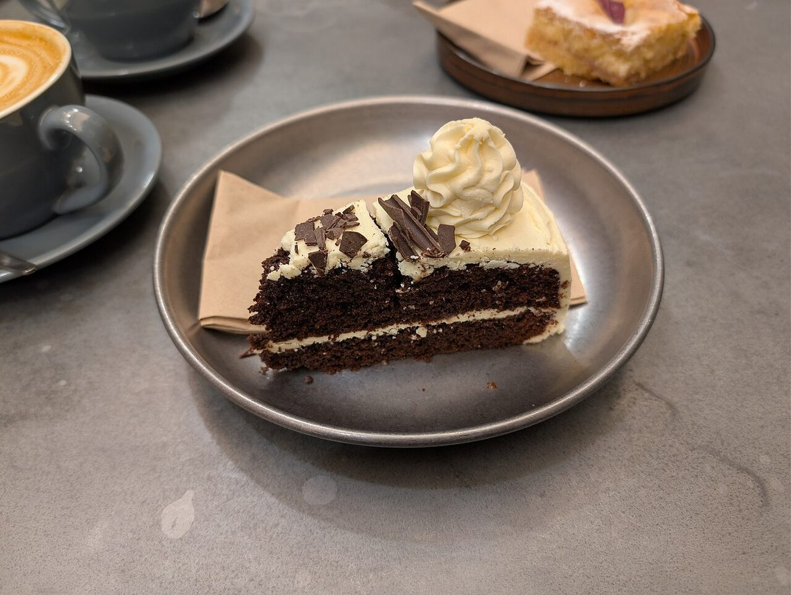

制作側の連想
「ボクゥ」を2回かけてみる
店名の由来は分かりません。制作側は「ボクゥボクゥ」という響きから、フランス語で「たくさん」を表す言葉を連想しました。「たくさん」が2つ重なるなら、掛け算のようにかけ合わせてみよう、と考えて、このサイトは九九の表をモチーフにしています。お店の理念や由来とは無関係な、制作側の連想です。
3段×4列=12枚(イメージ)
たくさん×たくさんの、洋菓子の写真。
写真は藤枝市やこのお店のものではありません。洋菓子のイメージで選んだ、国外・撮影地不明のフリー素材です。お店で提供している商品を示すものでもありません。




ご案内
お店のこと(確認できたものだけ)
| 所在地 | 〒426-0019 静岡県藤枝市天王町2丁目9-53 |
|---|---|
| 電話 | 054-644-0978 |
| 営業時間 | 準備中 |
| 定休日 | 準備中 |
| ご予約 | 準備中 |
| 駐車場 | 準備中 |
| SNS | Instagram @beaucoup_beaucoup |